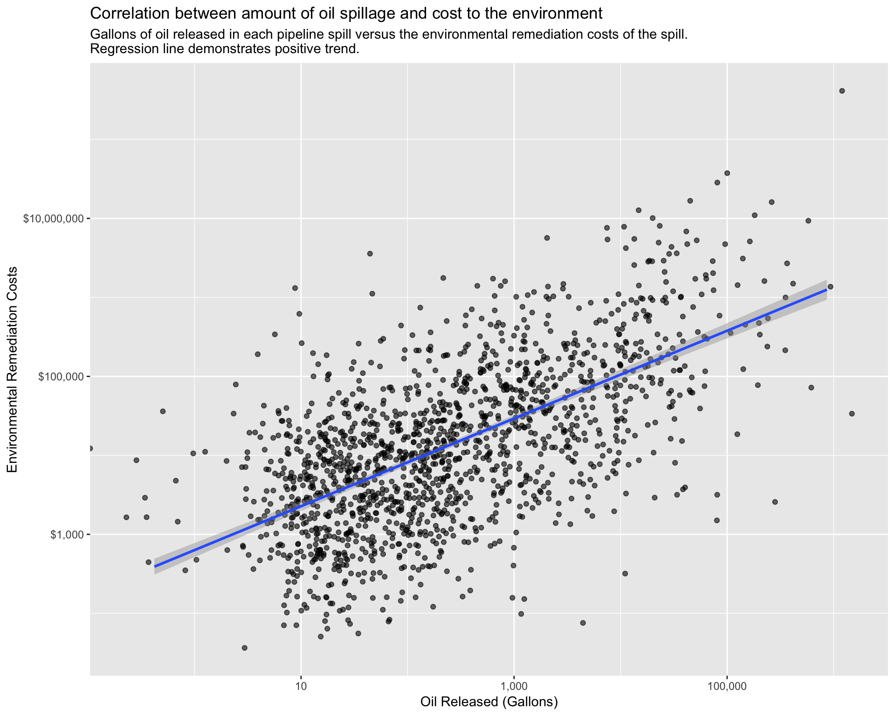
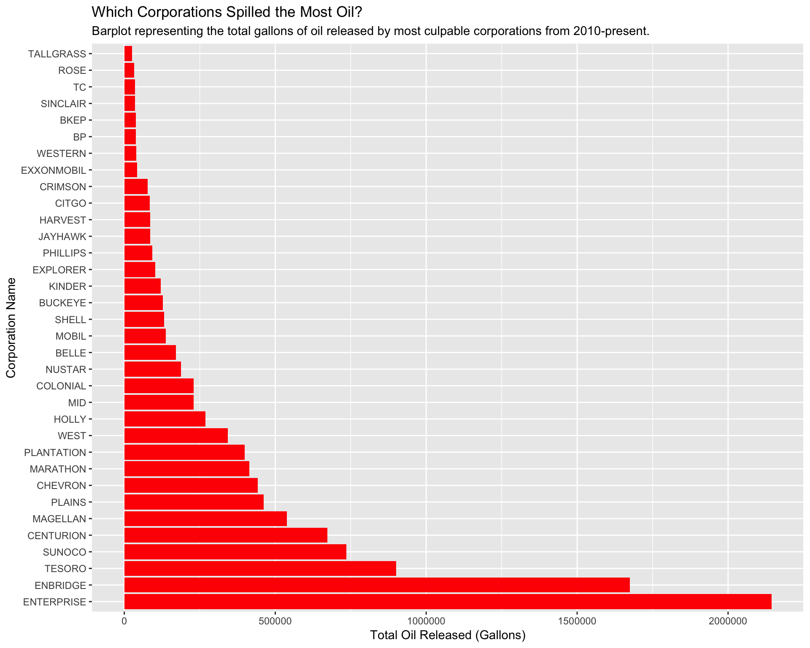

The Environmental Impact of Oil Pipeline Spills
Caitlin Timmons, Sarah Weden, Kendall Al-Bashir
Last updated on 2018-12-15
“Liquid Gold”: Oil’s Expense On the Environment
Write your “more information” section here.
library(tidyverse)
library(leaflet)
library(sf)
library(readxl)
library(maps)
library(USAboundaries)
us_counties <- us_counties(map_date = NULL, resolution = c("high"), states = NULL) %>%
select(name, state_abbr) %>%
mutate("State_ID" = state_abbr, "County" = name) %>%
filter(State_ID != "GU", State_ID != "VI", State_ID != "PR", State_ID != "AS", State_ID != "MP", State_ID != "HI", State_ID != "AK")
USA_sf <- maps::map("state", plot = FALSE, fill = TRUE) %>%
sf::st_as_sf() %>%
sf::st_transform(4326) %>%
mutate("State" = ID) %>%
select(-ID)
pipeline_spills <- pipeline_spills <- read_excel("database.xlsx") %>%
unite(col = "Accident_Location", c("Accident_City", "Accident_State"), sep = ", ", remove = FALSE) %>%
mutate("State_ID" = Accident_State, "Barrels_Gallons" = Unintentional_Release_Barrels*42) %>%
separate(col = Operator_Name, into = c("Operator_General"), sep = " ", remove = FALSE, convert = FALSE,
extra = "drop", fill = "warn") %>%
filter(Environmental_Remediation_Costs > 0, Longitude < -60)pipeline_operators <- pipeline_spills %>%
group_by(Operator_General) %>%
summarize(n_spills = n()) %>%
filter(n_spills > 5) %>%
inner_join(pipeline_spills, by = "Operator_General")
ggplot(data = pipeline_operators, mapping = aes(x = Barrels_Gallons, y = Environmental_Remediation_Costs)) +
geom_jitter(width = 0.3, height = 0.3, alpha = 0.7) +
geom_smooth(method = lm) +
scale_y_log10() +
scale_x_log10() +
labs(title = "Correlation between amount of oil spillage and cost to the environment", subtitle = "Gallons of oil released in each pipeline spill versus the environmental remediation costs of the spill.
Regression line demonstrates positive trend.", x = "Oil Released (Gallons)", y = "Environmental Remediation Costs ($)")
Who Is Responsible for the Environmental Damage?
pipeline_barrels <- pipeline_operators %>%
group_by(Operator_General) %>%
summarize(Sum_Gallons = sum(Barrels_Gallons)) %>%
mutate(Operator_General = reorder(Operator_General, -Sum_Gallons)) %>%
filter(Sum_Gallons > 1000)
ggplot(data = pipeline_barrels, mapping = aes(x = Operator_General, y = Sum_Gallons)) +
geom_col(fill = "red") +
coord_flip() +
scale_fill_discrete(guide = FALSE) +
labs(title = "Which Corporations Spilled the Most Oil?", subtitle = "Barplot representing the total gallons of oil released by most culpable corporations from 2010-present.", y = "Total Oil Released (Gallons)", x = "Corporation Name")
Pipeline Spills and Overall Pollution
pollution <- read_excel("pollution.xlsx") %>%
separate(col = Date_Local, into = c("Year", "Month", "Day"), sep = "-",
convert = FALSE, extra = "warn", fill = "warn") %>%
group_by(County, Year) %>%
summarize(mean_NO2 = mean(NO2_Mean)) %>%
right_join(us_counties, by = "County") %>%
select(-c(name, state_abbr)) %>%
drop_na()
pipeline_spills_sf <- pipeline_spills %>%
filter(Longitude >= -130) %>%
st_as_sf(coords = c("Longitude", "Latitude"), crs = 4326)
ggplot() +
geom_sf(data = USA_sf) +
geom_sf(data = pollution, aes(fill = mean_NO2)) +
scale_fill_continuous(low = "yellow", high = "darkred",
space = "Lab", na.value = "white",
guide = "colourbar", aesthetics = "fill") +
geom_sf(data = pipeline_spills_sf, size = 0.5, col = "blue") +
coord_sf(crs = 4326) +
labs(title = "Relationship Between Pollution Levels and Pipeline Spills",
subtitle = "Mean nitrogen dioxide release by county from 2000-2016, plotted against occurrances of oil pipeline spills from 2010-present", x = "Longitude", y = "Latitude", fill = "Mean NO2 Release (Parts Per Billion")